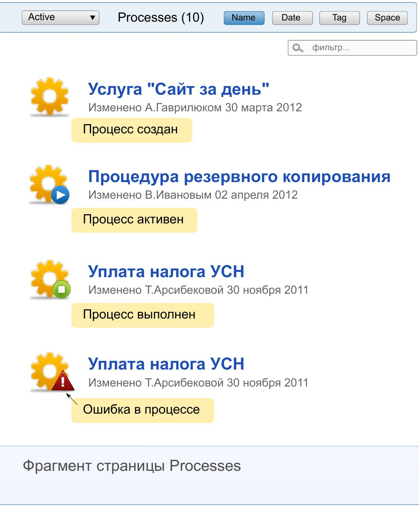

max(R) = max(D)
最大限度的尊重与最大限度的要求 ——
把 A.S. 马卡连柯模式变成工具
TeamTime 的缘起
TeamTime 不是为“市场”而发明的。它源于一位小团队负责人的需求：看清实际完成了什么，公正评价每个人的劳动，同时不被管控工作淹没。
要解决的问题
- 工作是看不见的。任务跟踪工具只显示任务已关闭，却不显示投入了多少劳动、工作是怎样完成的。
- 金钱不是好的尺度。费率各不相同，价格不断变化，“这项工作值多少钱”的讨论很快变成讨价还价，而不是对结果的讨论。
- 管控吞噬管理者。没有系统，主管只能逐个当面询问 —— 既浪费时间，又损害信任。
- 会计系统对小企业来说太重。开具验收单和计算报酬，不应该需要一套单独的会计软件。
网络工作室 “Media Publish”
团队按照“尊重 + 要求”的原则工作。由此产生了记录每个人工作的需要：任务、报告、工时。
TeamTime 第一版
记账、日历、BPM 流程编辑器、职业发展、文书以及客户门户。该系统成为工作室的主要工具。
个体经营者 A.N. 加夫里柳克
TeamTime BPM 至今仍作为项目管理工具在使用。
分布式研发团队
TeamTime BPM 的可用原型管理着罗斯托夫电子厂远程嵌入式软件团队的工作。
新版本
理念被明确为马卡连柯模式的工具；机器人和 AI 智能体作为执行者加入流程。
是时间，而不是金钱 —— 有用劳动的等价物
在 TeamTime 中，工作的尺度是一小时经确认的有用劳动。金钱是派生量：它由工时计算得出，而不是反过来。
对每个人都一样清楚
主管、工程师和客户都能理解一小时的工作。工时可以事先约定、与计划对比，并在不讨价还价的情况下讨论。
不会贬值
价格和汇率会变，但一小时劳动始终是一小时。员工积累的经验以工时表示，多年后依然有意义。
只计入有用的劳动
只有当一小时背后有报告和被验收的结果时，它才被计入。在系统中“只是在场”不会变成报酬。
不同职业之间可比
程序员、设计师和管理员使用同一尺度。资质差异体现在小时费率上，而不是不同的核算逻辑。
与人一同成长
某一专业的确认工时就是真实经验。积累经验 —— 升入小时费率更高的下一级别。
诚实的经济账
项目和流程的成本按真实工时计算（作业成本法，Activity Based Costing），而不是凭感觉估算。
TeamTime 如何运作
系统所依托的五项原则。截图来自第一版（俄语）界面；其背后的逻辑没有改变。
工时记录与报告
员工打开任务，点击“开始”—— 计时器开始运行。完成后写一份简短报告：做了什么，结果如何，用了多少时间。
- 报告是一天中最重要的文件：简短、切题、注明时间。
- “我们在做什么？”动态实时显示团队的报告。
- 每个任务、项目和员工的计划 / 实际工时一目了然。
- 负责人依据报告管理，而不是靠询问。

流程、项目、任务 —— 计划与核算的基本单位
重复性工作只需描述一次流程，之后从模板目录中启动。每个任务都写成技术任务书：已知什么、要求什么、怎么做。系统中没有含糊的指派。


在正确的时间，把信息送给正确的人
流程会自动沿链条传递工作：一位参与者提交报告后，下一位就会收到自己的任务 —— 附带说明和输入数据。
- 员工只看到自己的任务和自己参与的流程，并收到每周工作计划。
- 负责人收到按项目、工作类型和人员汇总的报告。
- 客户在自己的门户（C-Report）中查看工作进度、报告以及计划 / 实际工时。

流程透明
TeamTime 中的流程是一张活的图，而不是放在文件夹里的规章。图上可以看到每一步由谁执行、工作当前进行到哪里、计划和实际耗用了多少工时。
- 简化的 BPMN 表示法 —— 10 种标准元素，无需培训即可理解。
- 按实际工时进行流程成本分析。
- 一眼就能看出哪一步遇到了困难或出现了错误。
- 已完成流程的归档 —— 记录工作实际是如何完成的。

给机器人和 AI 的任务 —— 也是流程的一部分
TeamTime 的任务格式 ——“已知 · 要求 · 说明”—— 本质上就是给 AI 智能体的现成任务描述。因此机器人成为流程中的又一名参与者：它在图上有自己的泳道、自己的任务和自己的报告。
- 例行步骤（收集数据、起草文件、检查）由智能体完成。
- 智能体以与人相同的格式提交报告 —— 工作依然透明。
- 决策和质量控制仍由人负责。
- 可以看到自动化为员工节省了多少时间。
软件模块
各模块共用一套员工、项目和任务数据。可以逐步部署：先从记账开始，再根据需要添加其他模块。
TeamTime 记账
系统核心：员工、项目、工作类型、任务与报告、汇总报表。
员工门户
- 任务执行计时器。
- 以技术任务书形式呈现的任务文本。
- 填写报告；按状态、紧急程度、项目筛选任务。
负责人门户
- 按项目、工作类型和员工统计的时间与费用支出。
- 员工报告和阶段汇总报表。
客户门户（C-Report）
- 项目的工作日志、报告和计划 / 实际工时。
- 阶段成果、资料和说明。

TeamTime Calendar
团队任务日历：谁、做什么、何时做。
- 月 / 周 / 日视图，可用鼠标拖动任务。
- 按员工、项目、工作类型、流程筛选。
- 子任务，以及计入子任务的计划 / 实际工时控制。
- 周期性任务：每日、每周、每月、每年。
- 每周通过邮件向每位员工发送工作计划。

TeamTime BPM
业务流程编辑器：流程图既是任务清单，也是任务执行的调度安排。
- 由 10 种标准元素组成的简化 BPMN 表示法。
- 图上的每个动作都是一个任务，带有执行者、计划工时和说明。
- 启动流程：任务自动从一位执行者传递到下一位。
- 成本分析（ABC）、模板目录、归档、业务领域。
- 步骤的执行者可以是人、机器人或 AI 智能体。
TeamTime 职业发展
按专业记录真实经验，为每位员工制定成长计划。
- 目标向量。入职时，负责人与员工共同制定与公司目标一致的职业目标。
- 真实经验。任务中的确认工时会按技能和专业自动累积。
- 级别与小时费率。透明的薪酬等级 —— 从实习生到负责人；依据确认工时晋级。
- 再培训。个人学习路径：以 BPMN 流程形式的教学计划、带报告的学习任务，以及结业时的技能评估表。


TeamTime 文书
按模板生成文件 —— 使用系统中已有的数据：流程、报告、客户信息和员工数据。
- 给客户：预算、工作验收单、发票、标准合同。
- 给员工：合同、现金支出单、报酬计算。
- 给潜在客户：网站上根据流程生成的在线服务计算器。
- 带变量的自定义模板。


TeamTime —— 用马卡连柯模式管理集体的工具
A.S. 马卡连柯模式依靠的是集体的组织方式，而不是管理者的个人品质。TeamTime 把这种组织方式变成日常实践：模式的每一项原则在系统中都有具体的机制。
max(R) = max(D)
对人的高要求体现的是对人的尊重，而没有要求的尊重意味着漠不关心。在 TeamTime 中，要求和尊重是同一个动作：明确布置的任务，加上诚实计算的劳动。
| 模式原则 | TeamTime 如何实现 |
|---|---|
| 最大限度的要求 | 每个任务都是“已知 · 要求 · 说明”，并带有计划工时。结果须经质量控制；只计入经确认的劳动。 |
| 最大限度的尊重 | 没有微观管理：负责人通过报告了解工作。报酬可预期，由工时计算；每个人的贡献整个团队都看得到。 |
| 指挥员的报告在公社中 —— 每日 | 员工每日报告：简短、有据、注明时间。用“我们在做什么？”动态代替询问。 |
| 集体作为工具 | 流程把人联系在一起：一个人的成果就是另一个人的输入。共同的工作日志让团队看见自己。 |
| 前景线 | 职业发展模块中的目标向量：近期前景是下一级别，远期前景是新的专业。 |
| 平行影响 | 负责人管理的是工作方式 —— 流程和模板 —— 而不是逐个管理每个人。 |
| 生产劳动与学习 | 学习任务就是普通的流程任务，同样有报告和工时；个人学习路径在同一系统中进行。 |
| 传统 | 流程模板目录保存着“我们这里的做法”，并把它传给新员工。 |
深入了解该模式
工学团与公社的历史、集体工作的规章、自 2008 年以来的应用经验部署方案
两种方案功能相同，区别在于数据存放在哪里、由谁维护服务器。
SaaS
云托管的 TeamTime
- 立即开始使用 —— 无需服务器和管理员。
- 更新、备份和技术支持由开发者负责。
- 员工、负责人和客户可随时随地通过浏览器访问。
- 适合分布式和远程团队。
适用于：小公司、工作室、项目团队和远程团队。
Personal server
部署在企业内网
- 有关工作、人员和流程的数据不出企业边界。
- 安装在客户服务器上；在封闭网络中运行。
- 与内部系统及自有 AI 智能体集成。
- 根据企业规章定制流程和文件模板。
适用于：制造企业、研发部门以及有信息安全要求的组织。